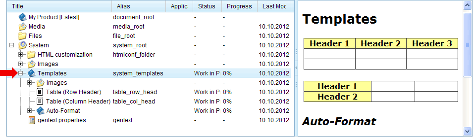
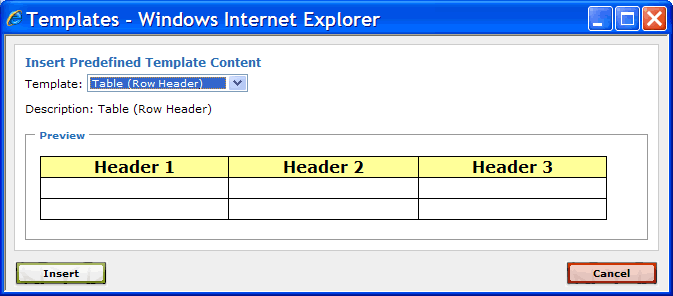
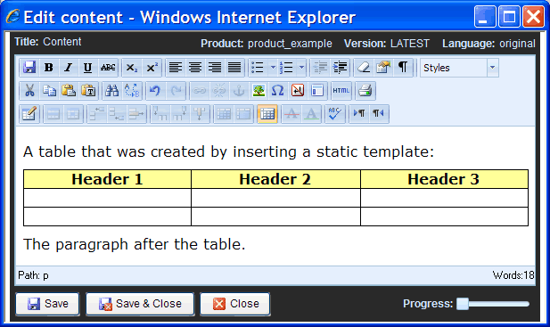

1.9.1. Static Templates
Static templates are useful if you have to create the same or similar content several times. In these situations you can ease your work by creating a static template once, and then insert the template by using the "Insert predefined content template" operation of the content-editor instead of recreating the content from scratch.
A static template is just a content-node as any other content-node, except that it is located in the folder with alias name "system_templates" (see red arrow in the following screenshot).

Figure 1.9.1. Templates folder
When a new product is created, the  System >
System >  Templates folder initially contains two example templates: a table with a header row and a table with a header column. You can delete them if you do not need them or you can modify them to fit your needs. Of course, you can add your own templates by creating additional content-nodes within the System > Templates folder.
Templates folder initially contains two example templates: a table with a header row and a table with a header column. You can delete them if you do not need them or you can modify them to fit your needs. Of course, you can add your own templates by creating additional content-nodes within the System > Templates folder.
Note:
A static template is only selectable in the content-editor if the template has an alias name. Therefore, instead of deleting a template, you can deactivate it by removing the alias name.
As an example we will now insert the content of the predefined template "Table (Row Header)" into our previously created content-node. Therefore, open the content-editor e.g. by double-clicking the content-node in the "Tutorial" section. Move the cursor e.g. to the end of the content. Click the "Insert predefined content template" button () in the content-editor's toolbar. This will open following dialog:

Figure 1.9.2. The template selection dialog
Select the "Table (Row Header)" template from the listbox. A preview of the template is shown in the preview area below the listbox. Now, click the "Insert" button to close the dialog. The selected template is then copied to the current cursor position.

Figure 1.9.3. Template after insertion into content
You can now adapt the inserted content according to your needs. This has no impact on the original template from which the table was created. Notice that it had been much more work, if you had to create the table from scratch.
Be aware that inserting a static template is a copy operation, i.e. changes to the template-nodes in the folder System > Templates do not affect any content that has already been inserted into content-nodes. This is different to the mechanism of "including" a node, which is described in a later chapter (see Chapter 1.11, Inclusions).